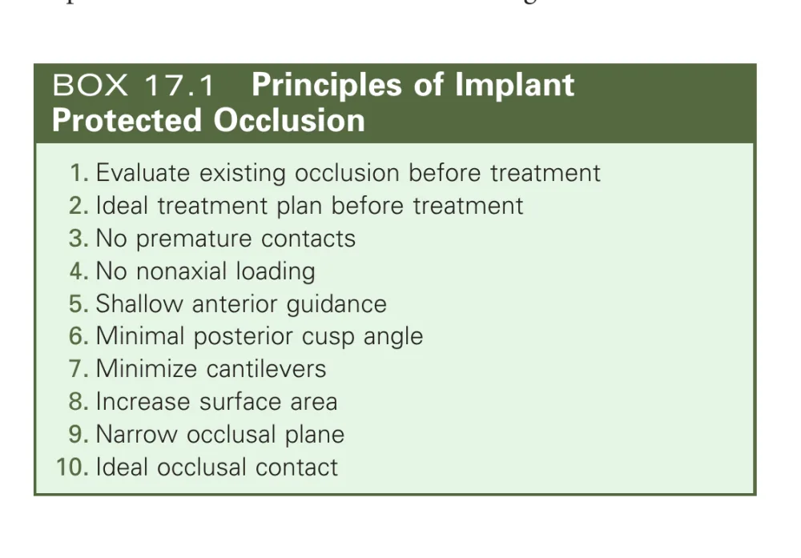
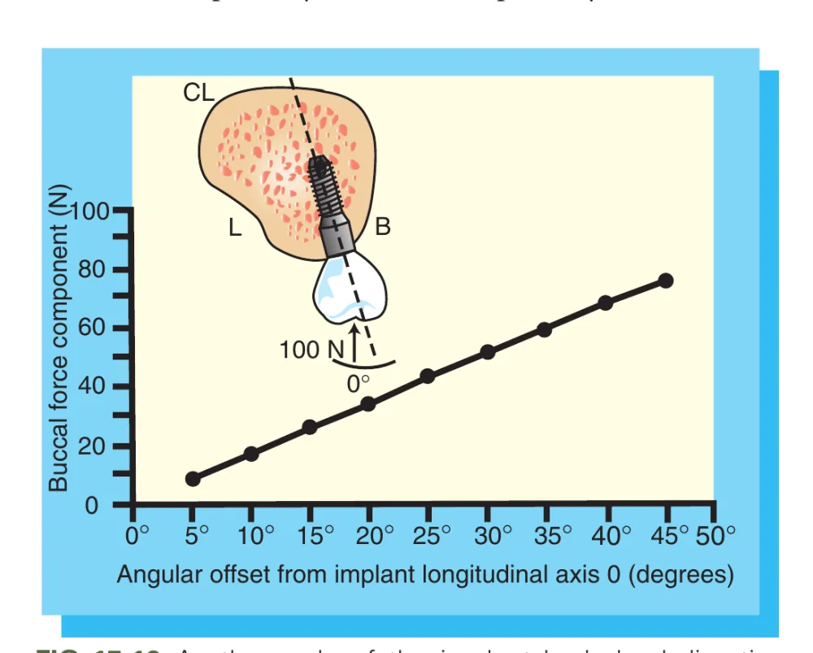

نسخه استخراجشده؛ ترجمه یا تأیید علمی انجام نشده است. وضعیت: captured
مفهوم را اینطور بشناس: «مفهوم اکلوژن محافظتشدهی ایمپلنت (IPO) منحصربهفرد است و بهطور اختصاصی برای بازتوانی پروتزی ایمپلنتهای دندانی طراحی شده است.»
و نکتهی مهم دربارهی نسبتش با اکلوژن متعارف: «اصلاحات جزئی از مفاهیم اکلوزالی پروتودانتیک متعارف، با تنها هدف کاهش استرس بر پروتز، برقرار شده است.»
«اصلاحات جزئی» — نه یک نظام کاملاً تازه. IPO اکلوژن متعارف را دور نمیریزد؛ آن را در جهت کاهش استرس تنظیم میکند.
و سه هدف صریحش:
«اکلوژن ایدهآل برای یک پروتز ایمپلنت این است که (۱) استرس بر سیستم ایمپلنت را کنترل کند، (۲) رابط ایمپلنتی قابلقبول از نظر پروتزی و زیستی فراهم کند، و (۳) پایداری بلندمدت استخوان مارجینال و پروتز را حفظ کند.»
و حالا ده اصل:
۱. ارزیابی اکلوژن موجود پیش از درمان
۲. طرح درمان ایدهآل پیش از درمان
۳. نبود تماسهای زودرس
۴. نبود بارگذاری غیرمحوری
۵. گاید قدامی کمشیب
۶. زاویهی کاسپ خلفی حداقلی
۷. به حداقل رساندن کانتیلورها
۸. افزایش سطح
۹. صفحهی اکلوزال باریک
۱۰. تماس اکلوزالی ایدهآل
ساختار این فهرست را ببین: دو اصل نخست پیش از درماناند، اصل هشتم مربوط به افزایش سطح است (سمت دیگر معادلهی استرس)، و هفت اصل باقیمانده همگی کاهش یا جهتدهی نیرو هستند.
و یک قید صادقانه که باید نگه داری:
«با این حال، این اصول برای همهی بیماران یا رستوریشنها یکسان نیستند.»
و دلیلش: «نیروهای تولیدشده توسط یک بیمار تحت تأثیر دامنهی پارافانکشن، دینامیک جویدن، موقعیت و محل قوس ایمپلنت، شکل قوس، ارتفاع تاج، و مورفولوژی تاج قرار میگیرند.»
هر شش متغیر را از یونیتهای پیش میشناسی — و همین نشان میدهد که IPO ادامهی همان قضیهی درمان استرس است، نه چیز جدایی.

دو اصل نخست IPO به تراش یا پروتز مربوط نیستند؛ هر دو پیش از درمان انجام میشوند.
«نخستین گام در فرآیند طرحریزی درمان ایمپلنتهای دندانی، ساخت کستهای تشخیصی دقیق برای ارزیابی اکلوژن موجود بیمار است.»
و ارزششان: «ارزش کستهای تشخیصی یا مدلهای مطالعه در همهی مراحل دندانپزشکی حیاتی است، بهویژه در ایمپلنتولوژی دهان.»
و چرا در ایمپلنت بیشتر؟ «وقتی نواحی بیدندان وجود دارد، ترکیب تحلیل مداوم استخوان و تغییرات دندانی مرتبط با دندانهای ازدسترفته، شمار عواملی را که باید برای بازتوانی دهان در نظر گرفته شوند بهشدت افزایش میدهد در مقایسه با درمان پروتودانتیک سنتی.»
یعنی هرچه بیدندانی بیشتر، متغیرها بیشتر — و ابزار تشخیصی ضروریتر.
و ترتیب تصمیمها:
«دندانپزشک ایمپلنت باید ابتدا نوع پروتز ایمپلنت را تعیین کند (یعنی FP-1، FP-2، FP-3، RP-4، RP-5)، سپس شمار و محل جایگاههای اباتمنت ایدهآل و اختیاری، و طرح اکلوزالی نهایی.»
سه گام به این ترتیب: نوع پروتز ← شمار و محل اباتمنت ← طرح اکلوزال. و این دقیقاً همان «از بالا به پایین» است که در قضیهی درمان استرس دیدی.
به این پنج گزینهی پروتزی (FP-1 تا RP-5) در یونیت گزینههای پروتزی بهتفصیل میپردازیم.
و آنچه کستهای مانتشده به دست میدهند:
«کستهای تشخیصی مانتشده روی آرتیکولاتور، ارزیابی اولیهی انتخاب محل ایمپلنت، الزامات زاویهبندی، انتخاب پروتز، اکلوژن موجود، و ساخت تمپلیت جراحی را ممکن میکنند.»
پنج خروجی از یک ابزار — و آخری، تمپلیت جراحی، پلی است میان طرح پروتزی و اجرای جراحی.
و یک فایدهی ارتباطی: «این کستهای مطالعه امکان ارزیابی پیش از عمل گزینههای درمانی را فراهم میکنند که میتواند با سایر درمانگران و تکنیسینهای آزمایشگاه و در جلسات مشاورهی بیمار مطرح شود.»
آرتیکولاتور — تعریف و طبقهبندی:
تعریف رسمی: «ابزاری مکانیکی که مفاصل گیجگاهیـفکی و فکها را نمایندگی میکند، و کستهای ماگزیلا و مندیبل میتوانند به آن متصل شوند تا برخی یا همهی حرکات مندیبل را شبیهسازی کنند.»
و باید پذیرفت: «امروزه کاربردها و اندیکاسیونهای انواع مختلف آرتیکولاتورهای بهکاررفته در دندانپزشکی پروتزی بسیار بحثبرانگیزند.» — و «آرتیکولاتورها میتوانند بر پایهی قابلیت تنظیم به چهار گروه دستهبندی شوند.»
و نکتهی پایانی این درس: دندانپزشک ایمپلنت میتواند عوامل نیرو را با «انتخاب ایدهآلترین موقعیت، شمار و اندازهی ایمپلنت؛ استفاده از مفهوم بارگذاری تدریجی استخوان در تراکمهای ضعیفتر؛ و انتخاب طرح اکلوزالی مناسب با عناصر طراحی تسکیندهندهی استرس» بهترین مدیریت را بکند.
سه ابزار: موقعیت/شمار/اندازه، بارگذاری تدریجی، طرح اکلوزال. دو تای اول را در یونیتهای پیش دیدی؛ سومی موضوع همین یونیت است.
